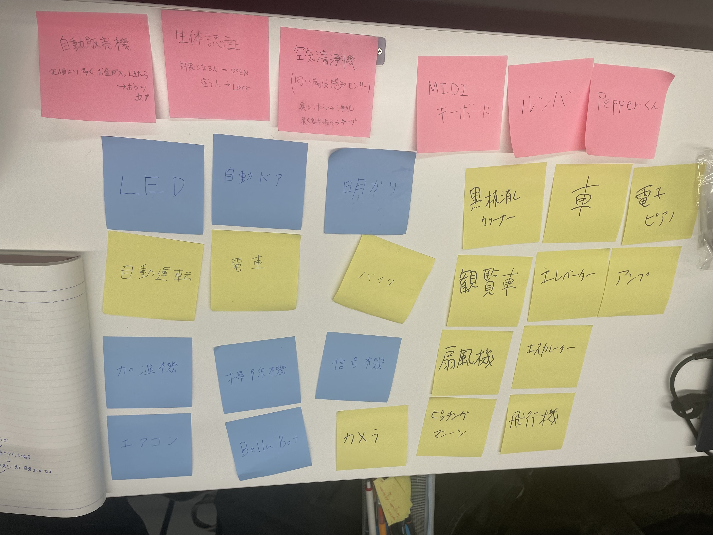
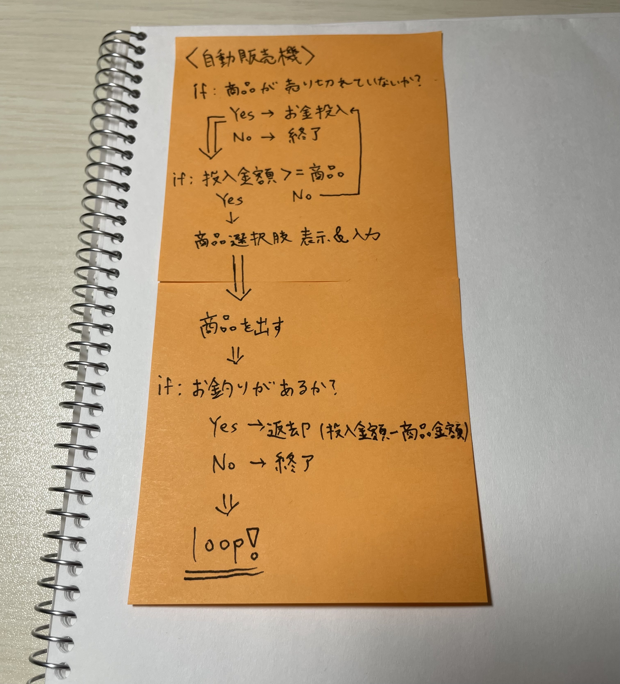
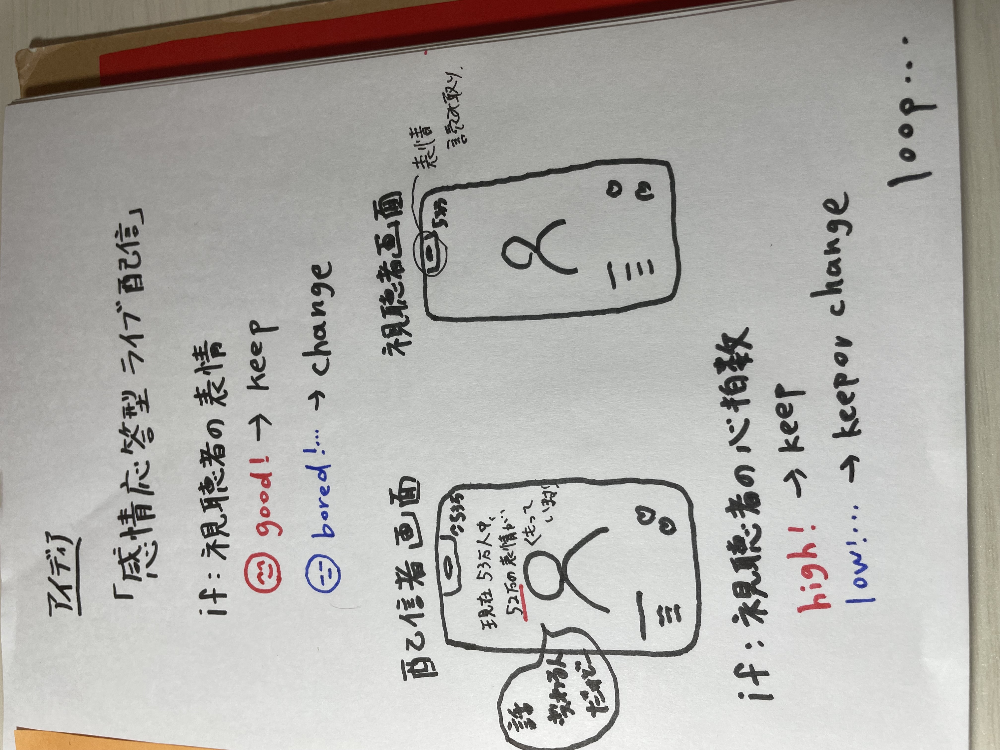

プログラミングでモノを動かす
[プログラムでモノを動かしているもの]

[プログラミング的な思考で手順を説明]
例:自動販売機

[プログラミングでできそうなこと]]
「感情応答型ライブ配信」

視聴者の表情や心拍数から感情を推定して、その反応に合わせてライブ配信をすることができるシステム。インスタライブやTikTokライブだったら、配信者は
視聴者の反応に合わせてトークをしてみたり、音楽ライブやお笑いライブだったら視聴者の反応によってセットリストやネタ順を決めたりすることができるシステム。